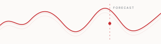
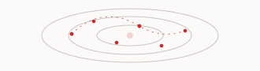
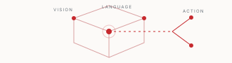

RESEARCH · TIME SERIES
From classical signals to foundation models.
Trace the progression from statistical forecasting and machine learning to transformers, foundation models and controlled dynamical systems.

In-depth research, ideas and perspectives on AI, robotics and the technologies shaping a more capable and human-centric future.

From statistical forecasting to pretrained temporal representations and dynamical systems.

Learning structured representations of complex systems, environments and their evolving states.

Connecting perception, language, reasoning and action for embodied intelligence.
We study models that understand evolving systems and connect perception, reasoning and action. The aim is to make complex scientific and real-world processes more understandable, predictable and useful.
Trace the progression from statistical forecasting and machine learning to transformers, foundation models and controlled dynamical systems.
Research note · 10 min read
Research note · 8 min read
Research note · 9 min read